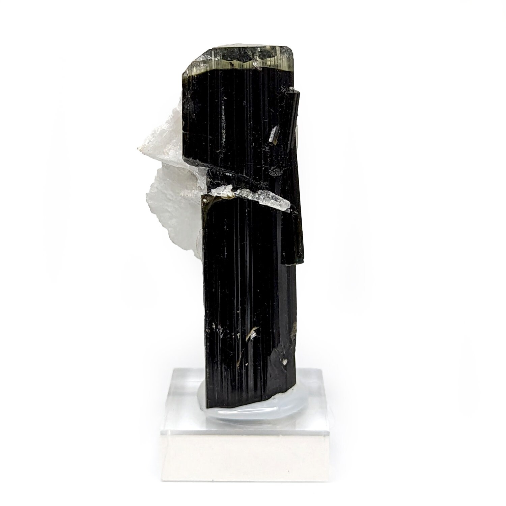

Rough Crystals
Natural form, visible structure, and color for collectors and cutters.
Natural gemstones, rough crystals, and mineral specimens sourced from the mineral-rich Karakoram region for collectors, jewelers, and wholesale buyers.
Natural form, visible structure, and color for collectors and cutters.
Selected for lapidary potential, clarity, body color, and usable shape.
Display-grade pieces with character, origin, and mountain presence.
KaraKoram Gems specializes in natural gemstones from Gilgit-Baltistan, Pakistan, including rough crystals, mineral specimens, and cutting-grade material.
We work with collectors, lapidaries, jewelers, designers, and wholesale partners who want stones with origin, character, and trusted sourcing.
Discover our story
Known for cool blue clarity and distinctive mountain-origin crystal structure.

Rare natural crystals selected for color, form, and collector-grade presence.

Unique natural formations for collectors, display collections, and study.
Each conversation starts with what you need: collector display, cutting rough, jewelry use, or wholesale parcels.
Gemstones and minerals connected to the Karakoram region of Gilgit-Baltistan.
Support for jewelers, lapidaries, collectors, and wholesale gemstone buyers.
Material chosen for natural beauty, structure, rarity, and intended use.